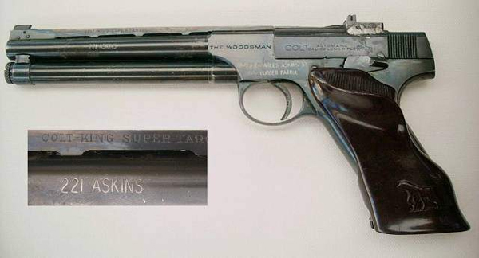
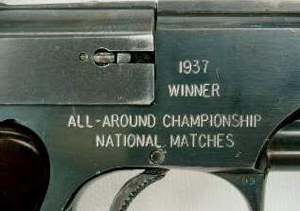
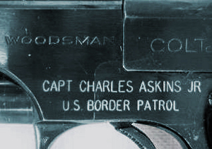

The Legendary Pistol of Charles Askins
This is the infamous story of the .22 caliber pistol that was converted to centerfire and helped Charles Askins win the National Matches at Camp Perry. The pistol was a Colt Woodsman with the gunsmithing done by no other than the legendary Frank Pachmayr. This story has been told so many times that the details are rarely straight. Here is the real story of the pistol, adorned with real photographs, in the words of the man who fired it, Col. Charles Askins:
"In 1937, while preparing for the National Matches, I developed the .221 Askins. This was a .22 caliber automatic which fired a .22 centerfire ctg. The NRA rules in '37 stipulated that "any centerfire caliber" could be fired in the Nationals. At that time the only useable centerfire cal was limited to the revolvers. You could fire the .32 S&W long which was the smallest caliber and one yet accurate enough to compete with. I concluded if I could develop a .22 centerfire I'd have the boys over a barrel."

"The .221 Askins was the 5.5 Velo-Dog cartridge shortened in length to exactly the .22 long rifle casing; the bullet was the standard .22 long rifle leaden slug at 40 grains. The Velo-Dog was designed to be fired in a French revolver; it had a rimmed casing. My gunsmith and I ran every case through the lathe and reduced the diameter of the rim to the same specs as the .22 long rifle rimfire shell."
"I had Frank Pachmayr alter the .22 Colt Woodsman to fire the centerfire ctg. This was not too difficult. He simply countersunk the face of the bolt to take the slightly thicker rim of the 5.5 ctg. He also redesigned the extractor to handle the new ctg. Changing the firing pin to strike center and not on the rim was no great chore."
"The pistol performed very reliably. There were no more jams than with the .22 rimfire and the accuracy was very good. I have forgotten what powder charge I used now but it was about 1-1/2 grains Bullseye. The biggest problem was saving empties. I had to erect a canvas sheeting to act as a baffle."
"I won the All-Around championship of the United States in 1937. In this match you had to fire once over the NM Course with the .22 rimfire, once over with the centerfire (everyone but me shot a .38 revolver) and once over the course with the .45 auto. The .221 Askins accounted for my winning."
 |
 |
"It also caused a storm of controversy! Word got all over Camp Perry about the pistol and those jazbos who were most likely to beat me howled the loudest. I got word before the Orton Match that my gun would be protested not because it was a .22 caliber (remember the NRA rules said, in those days, "any centerfire caliber") but because the rear sight was behind the hammer. I got wind of this and ran into Port Clinton and had an auto mechanic move the rear sight forward on the slide and simply solder it in place. If you get this gun you will see the somewhat crude job he did."
"The pistol really upset C.B. Lister and old Gen Reckord. They got the Board of Directors together, those who were at Perry, and they discussed barring my pistol somehow. But they could not quite decide how the rule book could be changed on such short notice. So I fired the highly controversial .221 Askins and won the All-Around Championship."
"The year following, let me assure you, the rules had been changed to read ".32 caliber and larger." It has read that way ever since!"
The above quotations are from a 1980 letter from Col. Askins to Col. Rex Applegate.